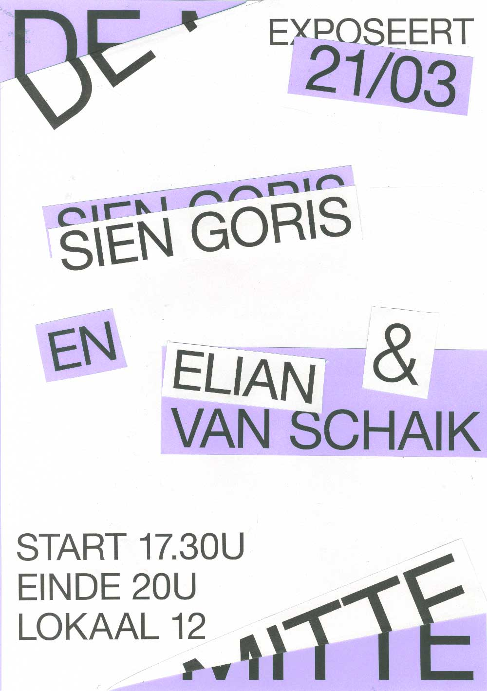
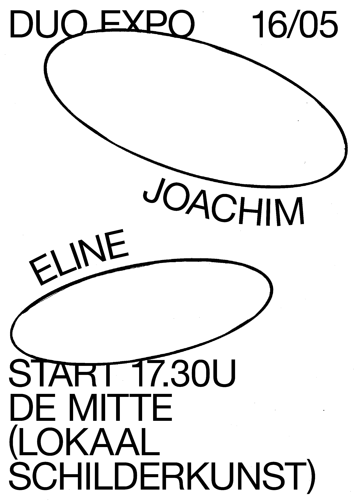
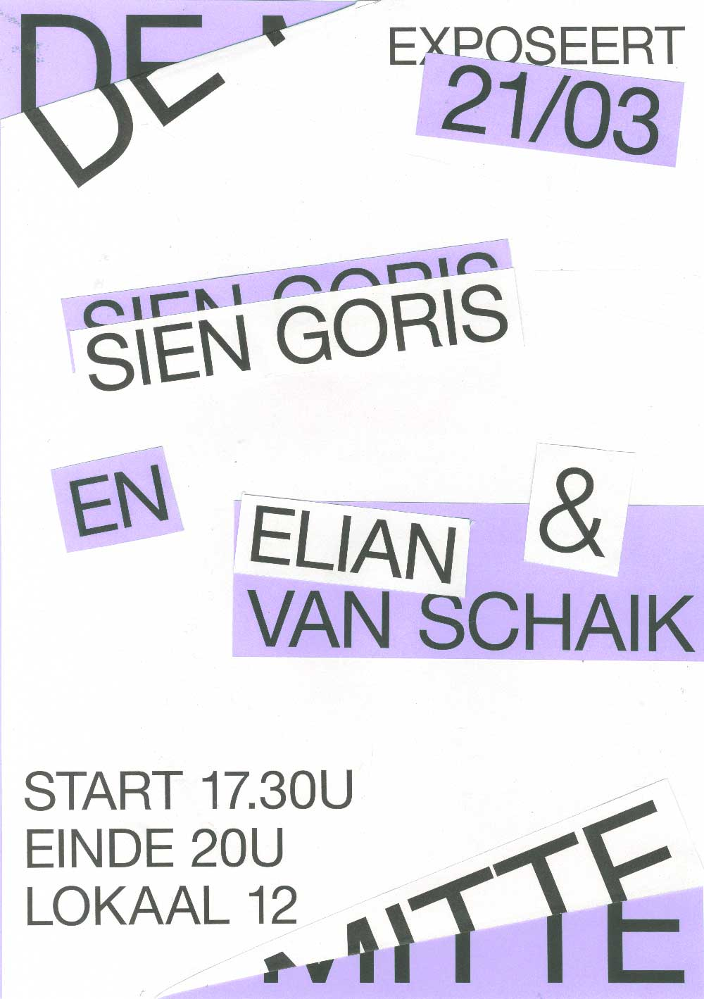
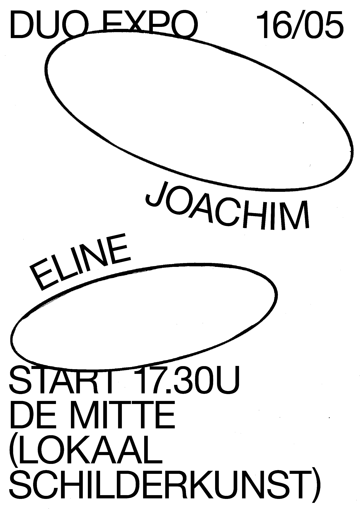

De posters voor De Mitte zijn tot stand gekomen door een samenwerking met studenten van de richting schilderkunst. In de kleine tentoonstellingsruimte werden in de loop van het jaar 2019 een aantal tentoonstellingen gehouden. Voor deze evenementen was een identiteit en vooral posters nodig. Wat hier te zien is zijn de posters van een aantal tentoonstellingen.